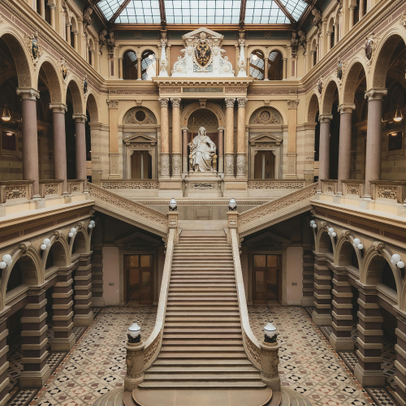

home > 법원소개 > 법원구성
법 원 구 성
구 성

대법원은 대법원장과 13인의 대법관으로 구성됩니다.
대법관 중에서 보임되는 법원행정처장은 재판에 관여하지 않습니다.
대법원장은 대통령이 국회의 동의를 얻어 임명하며 임기는 6년으로
중임할 수 없습니다.
대법원장의 대법관 후보 제청을 위하여 대법원에 대법관후보추천위원회
(위원장 1명을 포함하여 10명의 위원으로 구성)가 구성되며,
대법관후보추천위원회는 제청할 대법관의 3배수 이상을
대법원장에게 대법관 후보자로 추천합니다.
대법원장과 대법관은 20년 이상 아래 직업에 종사하였어야 하고,
45세 이상이어야 합니다.
실제로 판사, 검사, 변호사 및 교수 등이 대법원장과
대법관으로 임명되고 있습니다.

재판연구관
대법원에는 사건의 심리 및 재판에 관한 조사와 연구 업무를 담당하는 재판연구관이 있습니다.
재판연구관은 대부분 경력 10년 이상의 법관들로 구성되어 있고, 법관 외에도 비법관 전문직 연구관들이 채용되어 전문분야에 대한 연구를 보좌하고 있습니다.